Simple and Easy Recipes
Search Recipes
Search
Find us on
Facebook
Home
Recipes
Categories
Images
Food Plating
About Me
All Our Posts
Grilled Chicken & Cheese Sandwich
Mango Rasgulla
Anda Bhurji
Ras Malai
Bhuna Chilli Chicken
Kanchkolar Chop
Chingri Macher Malai Curry
Aam Kasundi
Bhuna Chicken Wings
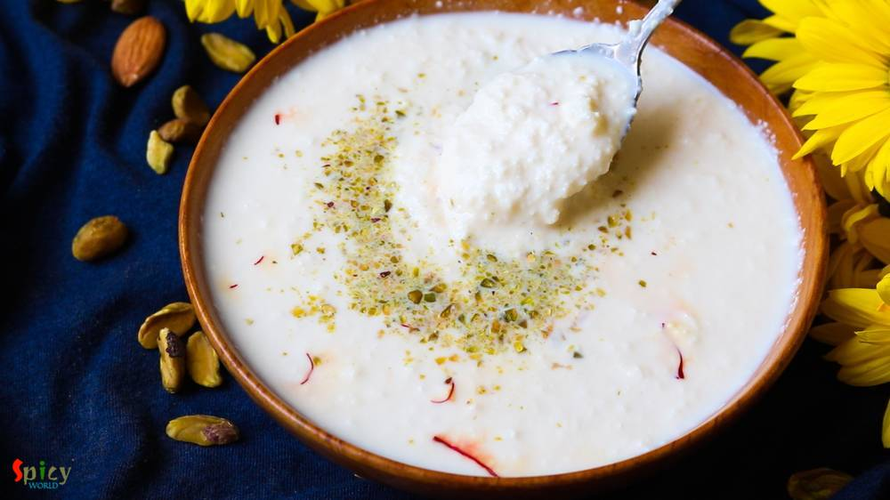
Chanar Payesh
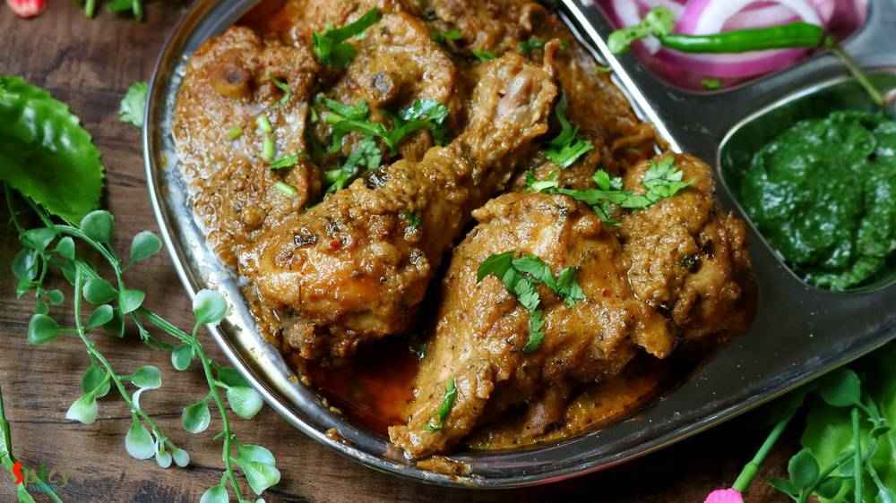
Afghani Chicken Curry
Mango Sandesh
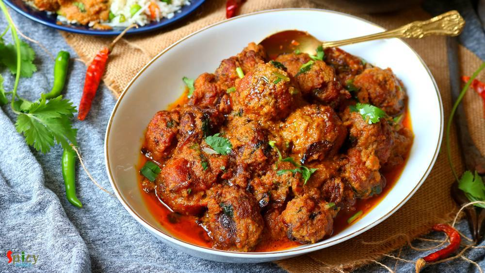
Fish Kofta Curry - party style !
Paneer Bhapa
Chicken Bharta (Kolkata style)
Malai Chum Chum
Chicken 65
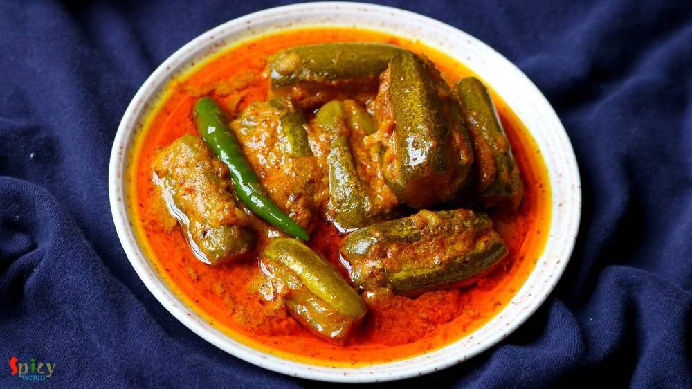
Doi Potol
Fish Fingers (Kolkata style)
Dimer Dalna
Chicken Dum Biriyani (Hyderabadi style)
Bengali Sponge Rosogolla
Mutton Korma
Niramish aloor dom
Steamed Chicken Momo
Steamed Chicken Momo
Momo's Chutney (smokey, hot & spicy)
Mughlai Keema Paratha
Chicken Hot and Sour Soup
Indian Savory Pancake
Sunday Mutton Curry
Lehsuni Daal Tadka
Chicken Lollipop
Koraishutir Kochuri
Dahi Chicken
Dimer Chop / Egg Devil
Paneer Bhurji Gravy
Mutton Handi
Quick Palak Paneer
Egg Chicken Roll (Kolkata style)
Nolen Gurer Sondesh
Chatpata Chicken Changezi
Dhaba style Egg Tadka Daal
Tandoori Prawn Pulao
Nolen Gurer Payesh
Hariyali Chicken Kabab
Kosha Aloor Dom
Dhaba style Keema Masala
Doi Fuchka
Kolkata style Chili Fish
Paneer Pakora
Egg Malai Curry
Pudina Chicken
Hara Bhara Kabab
Rajasthani Laal Maas
Ghugni
Egg Fried Rice
Kosha Chingri Macher Kalia
Dhaba style Paneer Butter Masala
Mutton Kosha
Paneer Kathi Roll
Kolkata style Chicken Biriyani
Moving to USA from INDIA?
Mughlai Chicken Curry
Spicy Egg Curry
Upma
Vegetable Chop / Vegetable Cutlets
Chilli Chicken (Kolkata Style)
Home style Daal fry / ঘরোয়া ডাল ফ্রাই
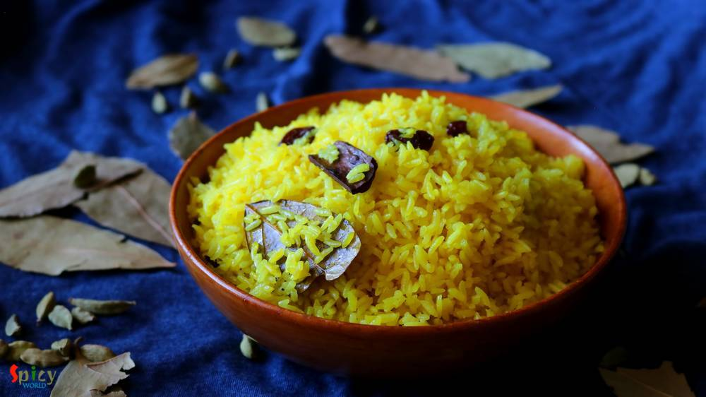
Basonti (or Basanti) Pulao / বাসন্তী পোলাও
Dhaba style Aloo Palak
Mango Lassi
Himachali Rara Mutton
Zafrani Pulao
Egg Roll - Kolkata style
Golmorich Kochu / Taro root Pepper fry
Chicken Kosha
Biyebarir Shukto
Green chili Mutton
Tandoori Shrimp Tacos with Mango salsa & Raita
Egg Chow Mein / Egg Noodles
How to prepare Beguni? (Crispy Eggplant Fritters)
How to prepare Butter Garlic Chicken Stew?
How to make Sobji Daal
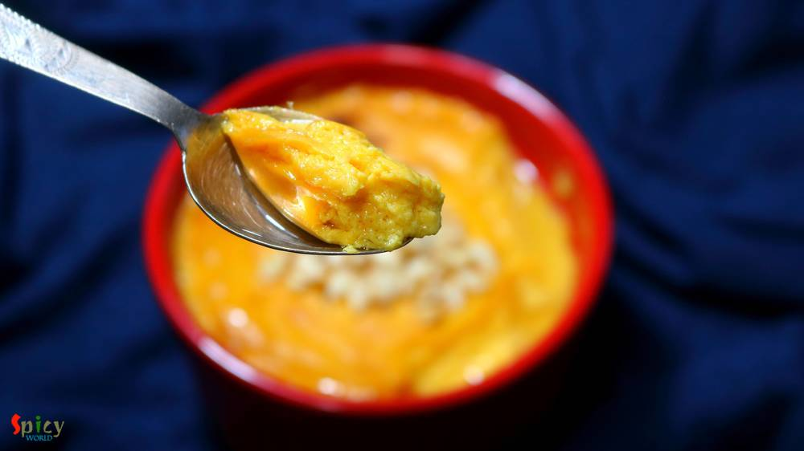
Bhapa Aam Doi
Butter Chicken Roll
Butter Chicken
Cold Coffee
Mango Mastani
Aam Kasundi diye Chingri Bata
Kancha Aamer Chutney
Sobji diye Macher Jhol
Doi Morich Murgi (Ma's recipe)
Chicken Fried Rice
Dhaba style Chicken Curry
Basic Chocolate Cake
Pav Bhaji
Dhaba style Mutton curry
Paneer Rezala
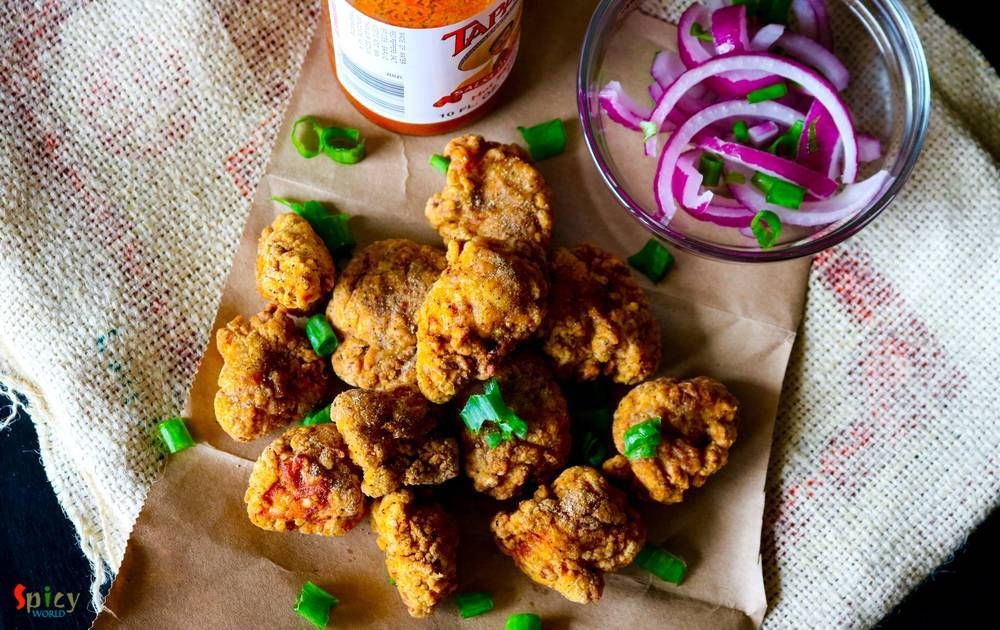
Popcorn Chicken
Mangsher Chop
Tandoori Fish Tikka
Chanar Dalna
Black pepper Mutton Curry
Sweet and Spicy Chicken Bites
We at Chicago
Launching a Blog
Bengali Chicken Stew
Whole Moong Curry
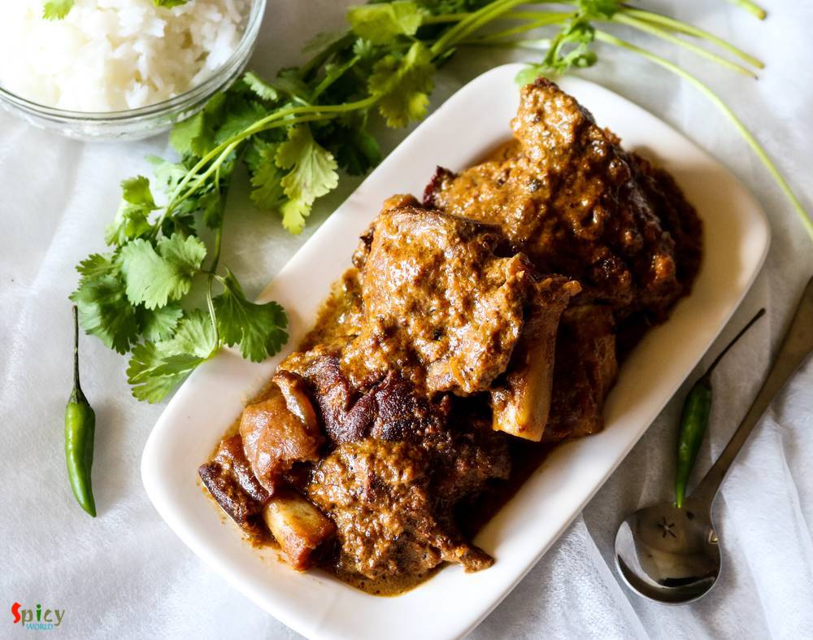
Peshawari Mutton
Food Review!!!
Sorshe Chingri Bhapa
Pheni Paratha
Chicken Tikka Masala
Maacher Jhuri
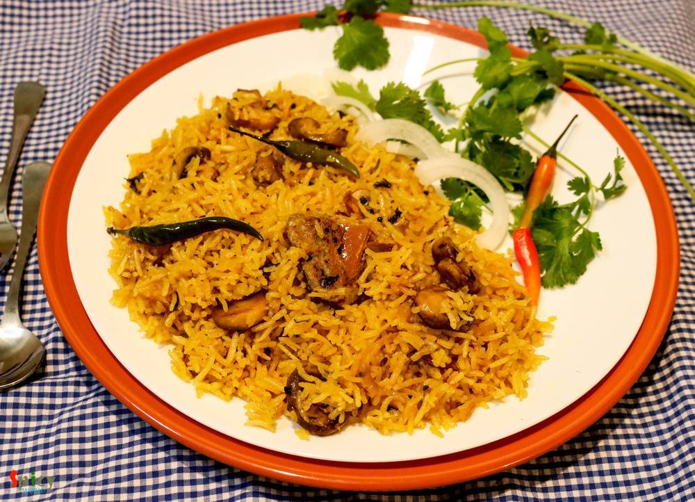
Achaari Pulao
Texas BBQ Experience
Second Bar and Kitchen
Chicken Dopyaza
Panchmel Daal
Simple Khichdi
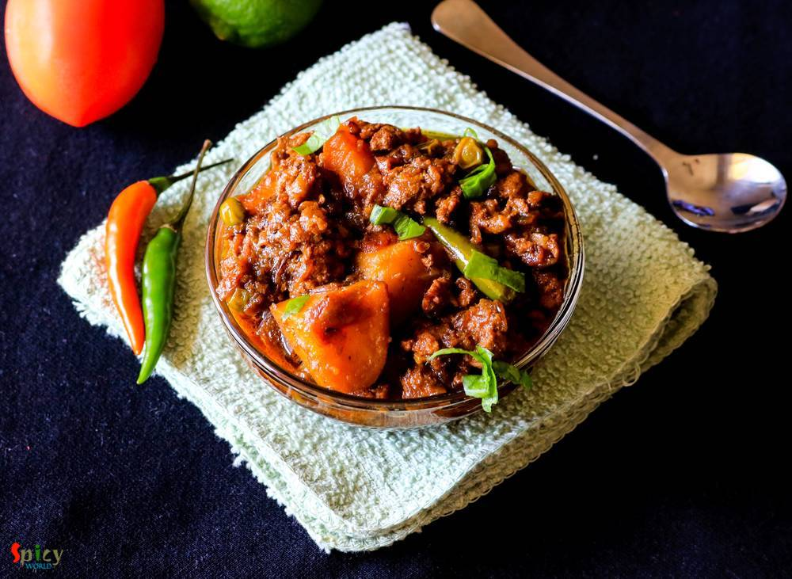
Keema Aloo
Panipuri / Phuchka
Pyaz Paratha
Mutton Kobiraji Cutlets
Macher Chop
Kolhapuri Murgh Masala
Gobi Manchurian
Chicken Shawarma in Pita pocket
Achari Khichuri
A Trip with Nature
Mangsher Ghugni / Keema Ghugni
Savory French Toast
Curry of Cheese Balls
Mutton Rezala
Bread Uttapam
Hara Pulao
Murgh Methi Malai
Luchi
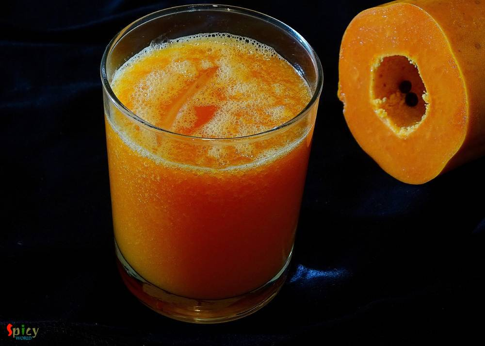
Papaya Smoothie
Coriander Chicken Kabab
Kolhapuri Egg (anda) Curry
Mango Mousse (Eggless)
Fish Roll (Kolkata Style)
Chicken Keema Paratha
Chaas
Lehsuni Murgh Masala
Chicken Cutlet (kolkata style)
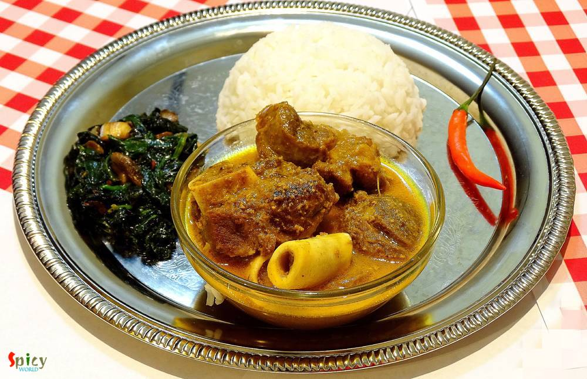
Vegetarian Mutton Curry
Chicken Malai Kabab
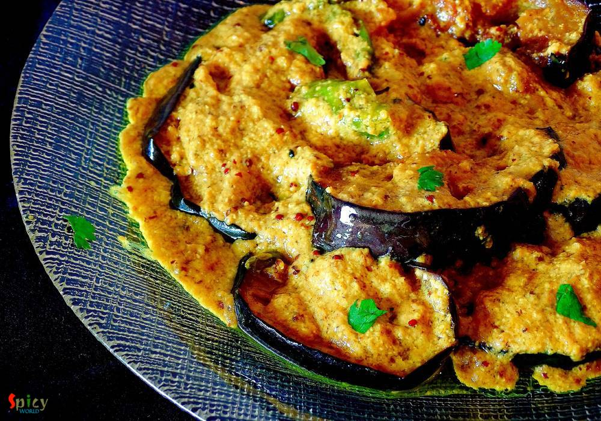
Begun Basanti
Fish Pakora
Chicken Bhuna Masala
Cheese stuffed Veggie Pops
Rustic Chicken Curry
Fish ball Curry
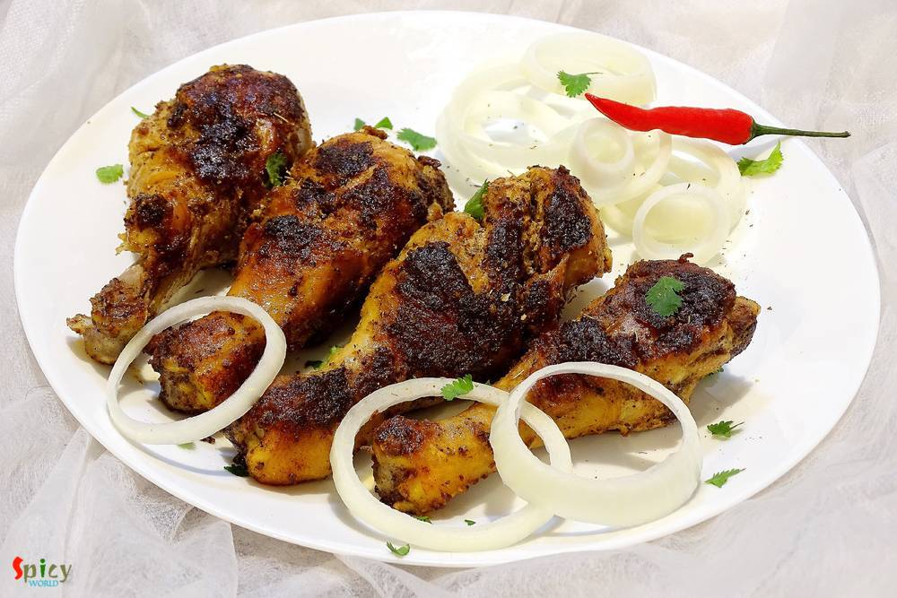
Pan grilled Chicken Drumsticks
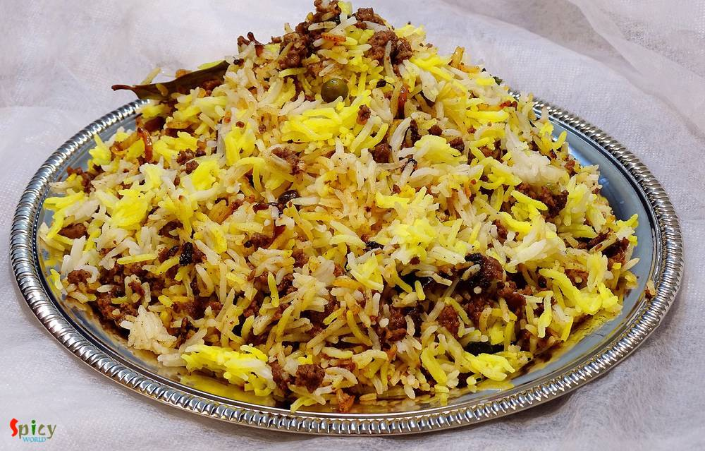
Mutton Keema Biriyani
Mutton Rogan Josh (Kashmiri Pandit style)
Sahi Paneer Korma
Mutton Keema stuffed Aloo Tikki
Chicken Rezala
Chicken Manchurian
White Cauliflower Curry
Soft Coconut Cake (Egg Less)
Spicy Urad Dal
Fish Kachori
Prawn Curry with Potato and Cauliflower
Chicken Tikka Kabab / Kebab
Lachha Paratha
Chicken Pizza with Makhni sauce
Fish Fry (Kolkata Style)
Masala Chai
Fish curry with yogurt
Chocolate Tres Leches Cake
Chocolate Cake Squares (Vegan)
Marble Cake
Prawn Biriyani
Vanilla Sponge Cake (No Fat)
Mutton Pulao
Palak Paneer
Chocolate Brownies using Brownie Mix
Ulta Biriyani
Jeera Rice
Gobi Pakore
Dahi Aloo
A short Trip to Dallas
Sorshe Dim Posto
Sish Kebab
Mutton Curry (Tagore family's recipe)
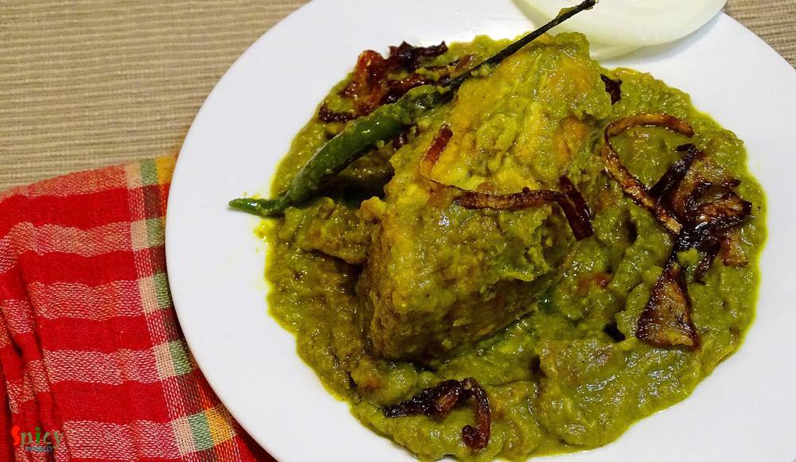
Fish curry with green Peas paste
Aloo Gobi (dhaba style)
Tzatziki Sauce
Mix Hakka Noodles / Mix Chowmin
Adabata aar kacha-lonkar Mutton
Sorse bata Maach
Ros Bora
Baingan ka Bharta / Begun Bhorta / Smoked eggplant curry
Singara (samosa)
Whole Tandoori Chicken
Chicken Chaap
Aloo ka Paratha / Spicy potato stuffed Bread
Chicken Pulao / Murg Pulao
Doi phuchka / Dahi puri Chaat
Crab Cakes / Crab Patties
Chicken Pokora (Pakora) / Chicken Fritters
Daal Bukhara / Spicy Black Lentils Soup
Paneer Paratha / Cottage Cheese Bread
Mutton Dakbunglow Curry / Mutton Dakbangla
Crispy Fried Calamari (Squid)
Sooji Halwa / Rava Kesari / Semolina Pudding
Potato Stew / Aloo Moricher torkari
Mutton Biriyani
Chicken do Rangeela / Double colored Chicken
Tandoori Chicken Wraps
Tortilla
Biulir Daal
Kata moshlar mangsho / Khara masala mutton
Mutton Dopyaza / Mutton curry with double onion
Chinese (style) Fried Rice
Jali Kabab / Net Kabab (Kebab)
Paneer Kofta Curry / Fried Cottage cheese balls curry
Paneer Kofta / Fried Cottage Cheese Balls
Paneer Makhani / Paneer Butter Masala / Makhanwala Paneer
Paneer (Indian Cottage Cheese)
Matar Kachori / Peas Kachori
Chingrir Chop / Shrimp Croquettes
Instant Narkel Naroo / Instant Coconut Nadus
Bhapa Posto
Pulled Chicken Burger
Baked Spicy Chicken Pasta
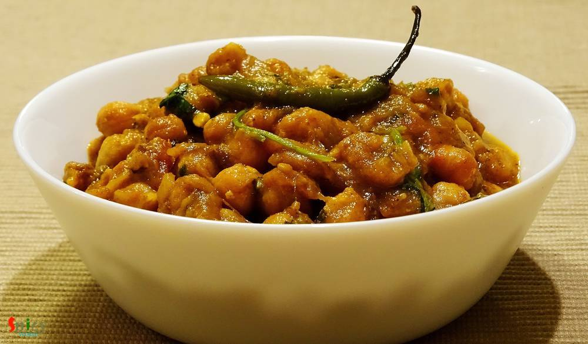
Chana masala / Chole masala (Curry of Garbanzo Beans)
Baked Rosogolla
Chicken Korma
Chicken Soup (Desi Style)
Dhaniya Chicken / Coriander Chicken / Dhonepata Chicken
Chicken Hakka Noodles
Aloo Fulkopi Posto (Potato and cauliflower cooked in poppy seed paste gravy)
Tandoori Chicken
Khatta Baingan (khatta begun)
Sukha Chicken (Dry Chicken Curry)
Niramish Aloo Torkari
Macher Muro die Muger Daal (Fish head cooked with spicy lentil soup)
Bhatura (with Yeast)
Kashmiri Dum Aloo
Macher Jhol
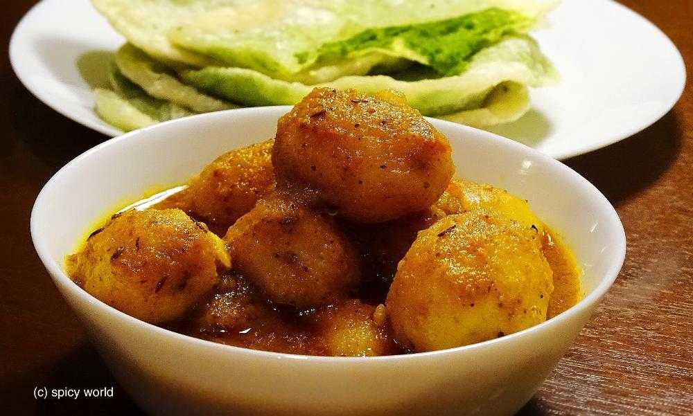
Simple Aloor Dom
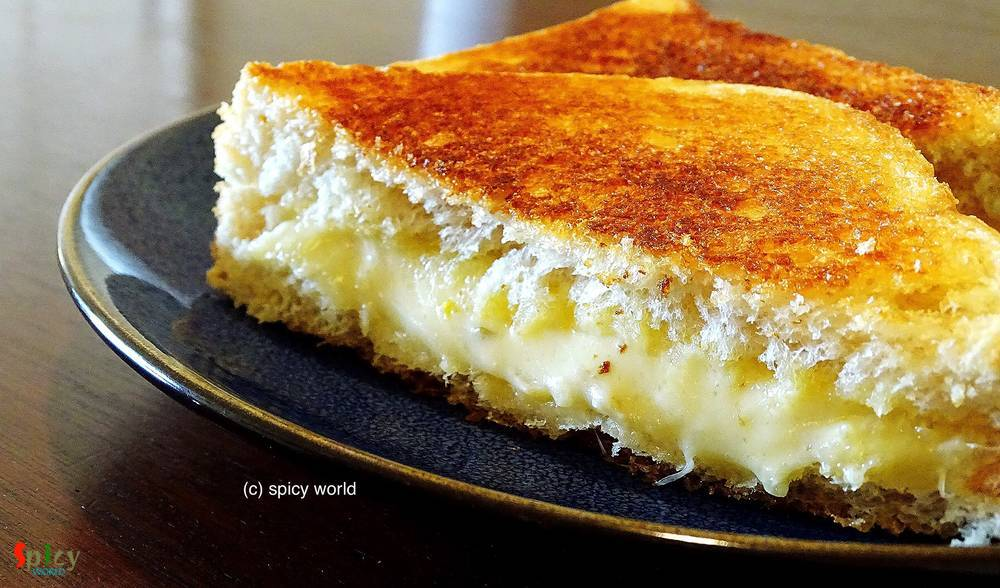
Grilled Cheese Sandwich
Chicken Sandwich
Radhaballavi
Chicken Chutney Kabab
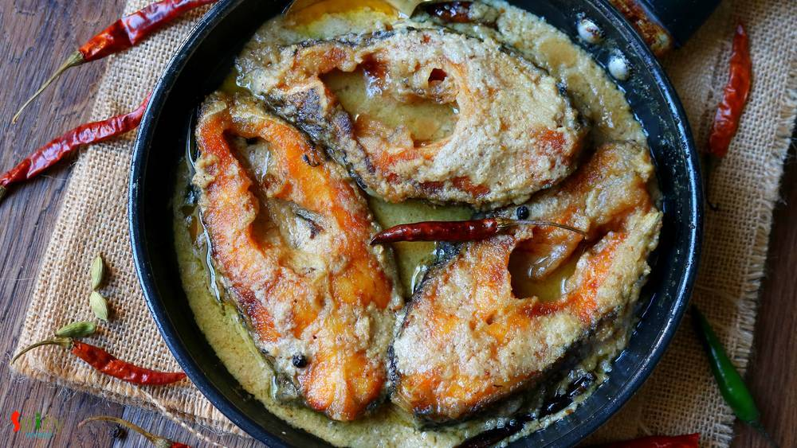
Fish Rezala
Makhmali Sondesh
Dahi Dhuan Chicken
Muri Ghonto (Fish head with spicy rice)
Chicken Tangri Kabab
Oreo Milkshake
Mutton Stew
Pineapple Milkshake
Dum Aloo
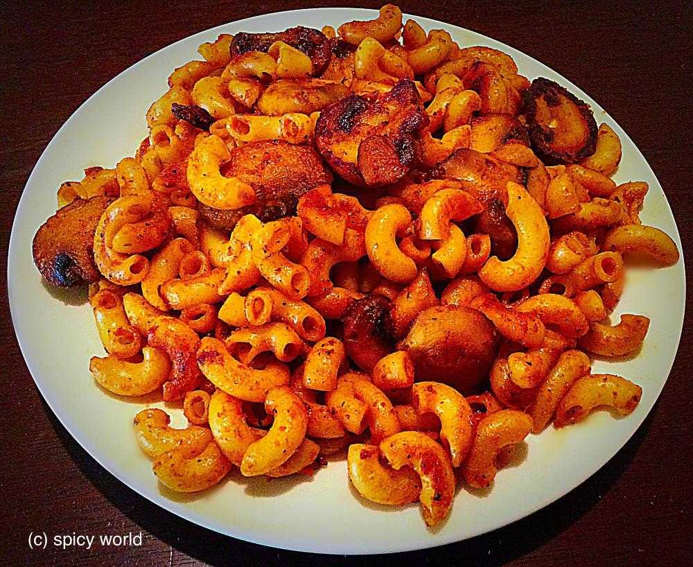
Spicy Macaroni with Mushroom
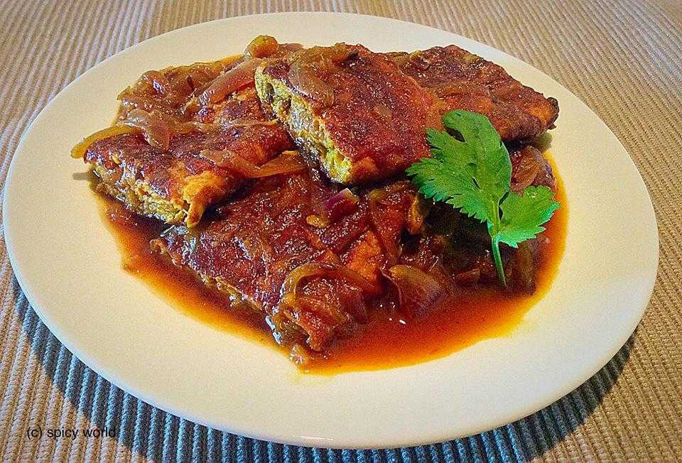
Omelet Curry
Mutton Tarka (Dhaba Style)
Macher Kalia (Different Style)
Macher chop (Fish Croquettes)
Dry Chili Fish with Mushroom
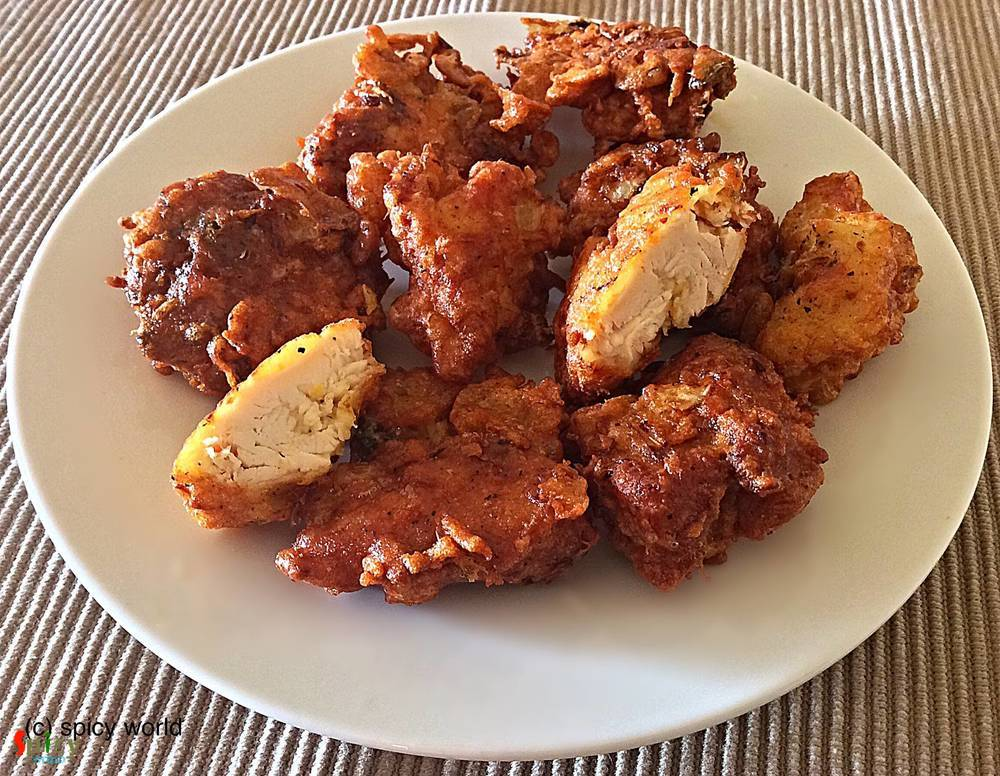
Chicken Pakora
Strawberry Milkshake
Lassi (Yogurt smoothie)
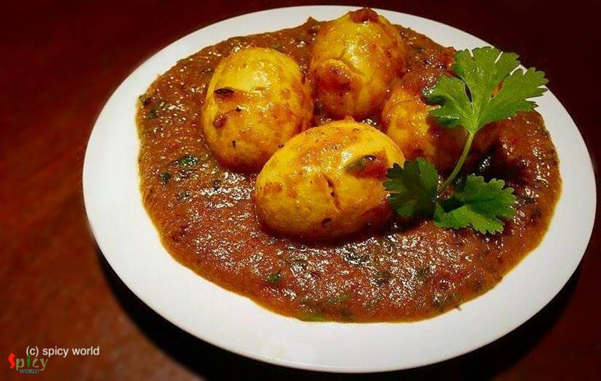
Dhaba style egg curry
Kasuri Methi Murg Masala
Vegetable Biriyani
Baked Chicken Legs
Matar Paneer Pulaao
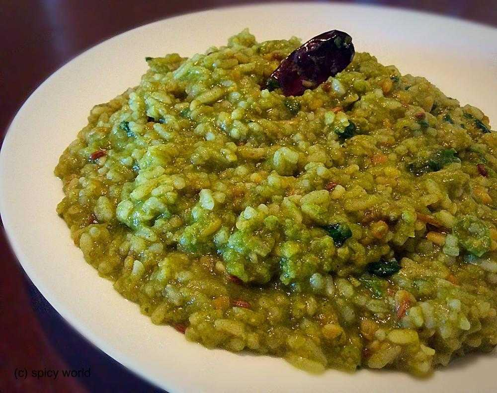
Palak Kichdi
Kadai Paneer
Musur daaler Bora (Red lentil fritters)
Watermelon Smoothie
Chicken Dakbunglow
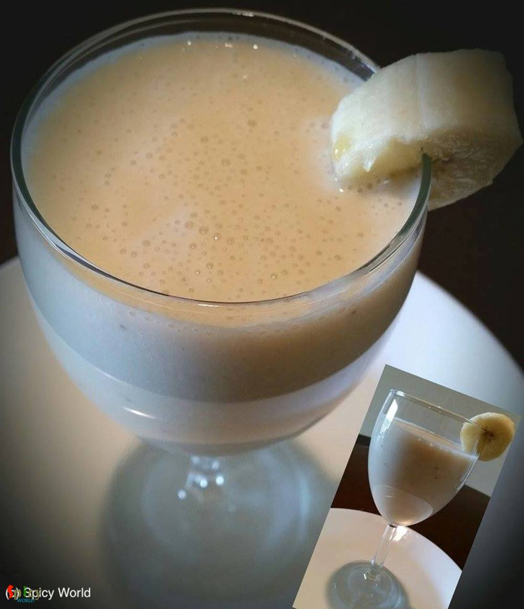
Banana Smoothie
Fish Kaliaa
Simple Murgir Jhol (Chicken Curry)
Aloo Posto (Potato with Poppy seed gravy)
Chicken Salad Sandwich
Mango Smoothie
Fried Rice
Chicken Roll
Egg Chicken Chowmein
Chicken kali mirch
Kadai Chicken
Sunday's Mutton Curry


{kind=link}
{kind=link}
{kind=link}
{kind=link}
{kind=link}
{kind=link}
{kind=link}
{kind=link}
{kind=link}
{kind=link}
{kind=link}
{kind=link}
{kind=link}
{kind=link}
{kind=link}
{kind=link}
{kind=link}
{kind=link}
{kind=link}
{kind=link}
{kind=link}
{kind=link}
{kind=link}
{kind=link}
{kind=link}
{kind=link}
{kind=link}
{kind=link}
{kind=link}
{kind=link}
{kind=link}
{kind=link}